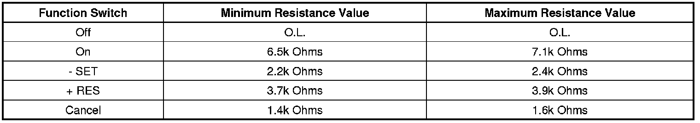

Cruise Control Malfunction
Cruise Control Malfunction
Diagnostic Instructions
* Perform the Diagnostic System Check - Vehicle (Initial Inspection and Diagnostic Overview) prior to using this diagnostic procedure.
* Review Strategy Based Diagnosis (Initial Inspection and Diagnostic Overview) for an overview of the diagnostic approach.
* Diagnostic Procedure Instructions (Initial Inspection and Diagnostic Overview) provides an overview of each diagnostic category.
Circuit/System Description
The cruise control switch is an input to the body control module (BCM). The BCM monitors the cruise control on/off, set/coast, resume/accelerate and cancel switches via the cruise control switch signal circuit in order to detect when the driver has requested to perform a cruise control function. The BCM detects a specific voltage signal on the cruise control switch signal circuit when a switch is applied. The BCM sends a serial data message to the engine control module (ECM) indicating the status of the cruise control switches.
Reference Information
Schematic Reference
Cruise Control Schematics (Electrical Diagrams)
Connector End View Reference
Component Connector End Views (Connector Views)
Description and Operation
Cruise Control Description and Operation (Description and Operation)
Electrical Information Reference
* Circuit Testing (Component Tests and General Diagnostics)
* Connector Repairs (Component Tests and General Diagnostics)
* Testing for Intermittent Conditions and Poor Connections (Component Tests and General Diagnostics)
* Wiring Repairs (Component Tests and General Diagnostics)
Scan Tool Reference
Control Module References (Programming and Relearning) for scan tool information
Circuit/System Verification
Important:
* Repair any brake system related symptoms and DTCs before performing this diagnostic.
* Electromagnetic interference (EMI) on the speed sensor signal circuit may cause erratic cruise control operation.
Engine ON, while rotating the steering wheel to both steering stops, observe the scan tool Cruise Control Switch parameter while pressing each of the cruise control switches. The parameter should toggle between On, Off, Resume, Set, and Cancel as the applicable switch is pressed.
Circuit/System Testing
1. Ignition OFF, remove the inflatable restraint steering wheel module. Refer to Inflatable Restraint Steering Wheel Module Replacement (Service and Repair) .
2. Disconnect the harness connector at the steering wheel controls switch - left.
3. Ignition ON, test for greater than 10 volts between the supply voltage circuit terminal 1 and ground.
• If less than the specified range, test the supply voltage circuit for a short to ground or an open/high resistance. If the circuit tests normal, replace the BCM.
4. Verify the scan tool Cruise Control Switch parameter is OFF.
• If not the specified value, test the signal circuit terminal 2 for a short to voltage. If the circuit tests normal, replace the BCM.
5. Ignition OFF, connect the harness connector at the steering wheel controls switch - left.
6. Ignition ON, with the cruise control switch in the ON position, observe the scan tool Cruise Control Switch parameter. The parameter should display ON.
• If not the specified value, test the signal circuit terminal 2 for a short to ground or an open/high resistance. If the circuit tests normal, test or replace the steering wheel controls switch - left.
7. Observe the scan tool Cruise Control Switch parameter while pressing the RES + portion of the cruise control switch. The parameter should display Resume.
• If not the specified value, test or replace the steering wheel controls switch - left.
8. Observe the scan tool Cruise Control Switch parameter while pressing the SET - portion of the cruise control switch. The parameter should display Set.
• If not the specified value, test or replace the steering wheel controls switch - left.
9. Observe the scan tool Cruise Control Switch parameter while pressing the Cancel portion of the cruise control switch. The parameter should display Cancel.
• If not the specified value, test or replace the steering wheel controls switch - left.
10. If the circuits test normal, test or replace the BCM.
Component Testing
Steering Wheel Controls Switch - Left
1. Ignition OFF, remove the inflatable restraint steering wheel module. Refer to Inflatable Restraint Steering Wheel Module Replacement (Service and Repair) .
2. Ignition OFF, disconnect the harness connector at the steering wheel controls switch - left.
3. Measure the resistance between the supply voltage circuit terminal 1 and the signal circuit terminal 2. Individually activate and hold each cruise control function switch and compare the resistance reading to the values for the On, Off, SET -, RES +, and Cancel switches.
• If any of the resistance measurements for the On, Off, SET -, RES + and Cancel switches are not within the listed resistance values, replace the steering wheel controls - left.

Repair Instructions
Perform the Diagnostic Repair Verification (Verification Tests) after completing the diagnostic procedure.
* Steering Wheel Control Switch Assembly Replacement (Service and Repair)
* Control Module References (Programming and Relearning) for BCM replacement, setup, and programming